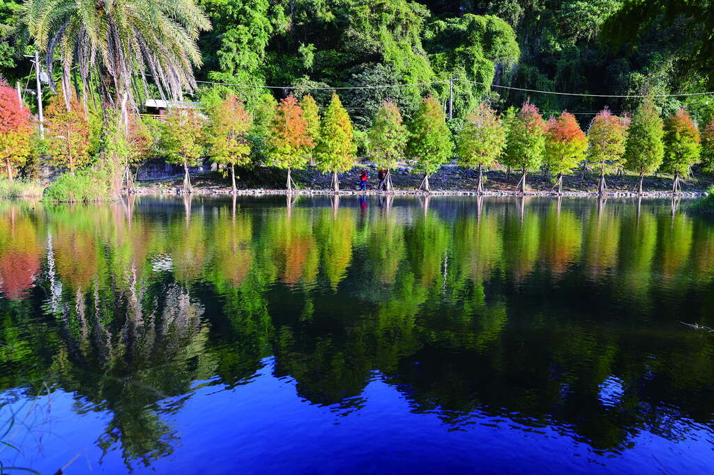

景點介紹
距大溪老街僅10分鐘車程，經由月眉休閒農業區就可以來到這片有如仙境的月眉人工濕地生態公園。2019年時，這裡種植了三百多棵的水生落羽松，兩三年後樹種日益茁壯，成果豐碩，每到秋冬，落羽松由綠轉紅，樹影倒映在水上，色彩繽紛，美不勝收。
近幾年來追逐橘紅黃的落羽松成了秋冬的一大盛事，但其實春夏落羽松的綠意盎然也一樣是令人看了心情愉悅，若再加上水池濕地，茂盛樹木倒映池水呈現清新翠綠美景。而月眉人工濕地生態公園，除了提供豐富生態觀賞遊憩，濕地還擁有如同天然過濾器般的功能，以調整池、草澤濕地、埤濕地、林澤濕地、生態池的淨化順序，減緩水的流速，達到削減60%水中污染物，以達到水質淨化的效果，並提升魚類、水鳥、昆蟲的棲地環境，兼具了教育和景觀等多元價值，是一個老少咸宜的戶外空間。
